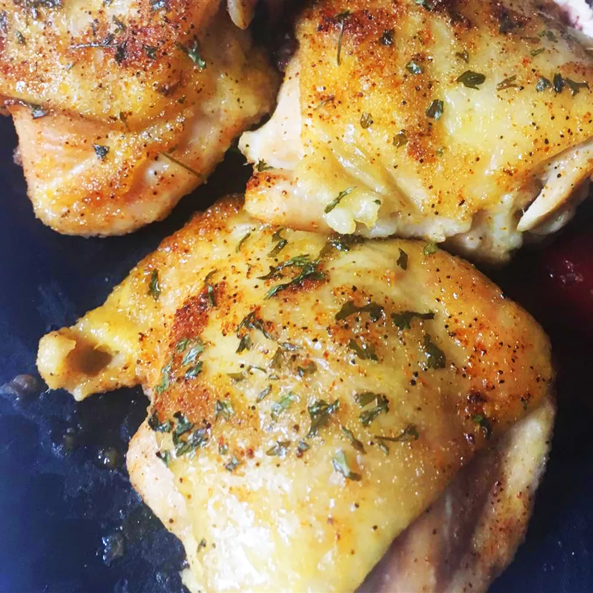

Easy Baked Chicken Thighs

Description
These easy baked chicken thighs require minimum preparation
Feel free to season the chicken with your favorite spices. I like to use cayenne powder and black pepper.
Ingredients
- 4 chicken thighs
- 4 teaspoons garlic powder
- 4 teaspoons onion flakes
Steps
Step 1
- Preheat the oven to 375 degrees F (190 degrees C).
Step 2
- Place chicken thighs in a baking dish; season both sides with garlic powder and onion flakes.
Step 3
- Bake in the preheated oven until no longer pink at the bone and juices run clear, about 30 minutes. An
instant-read
thermometer inserted into thickest part of thigh, near the bone, should read 165 degrees F (74 degrees C).